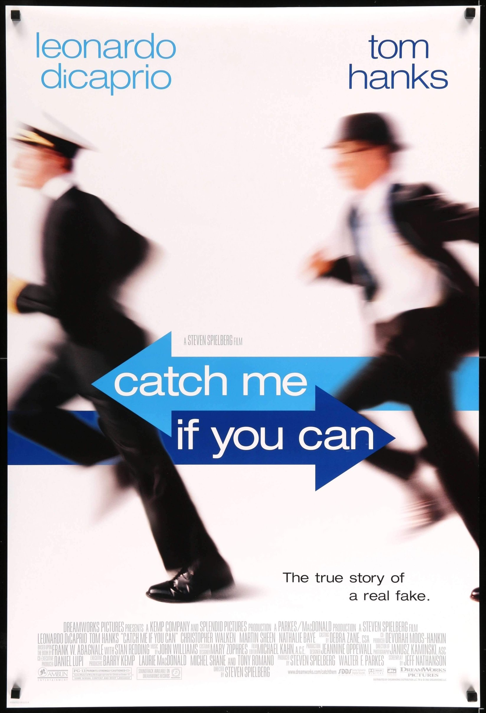
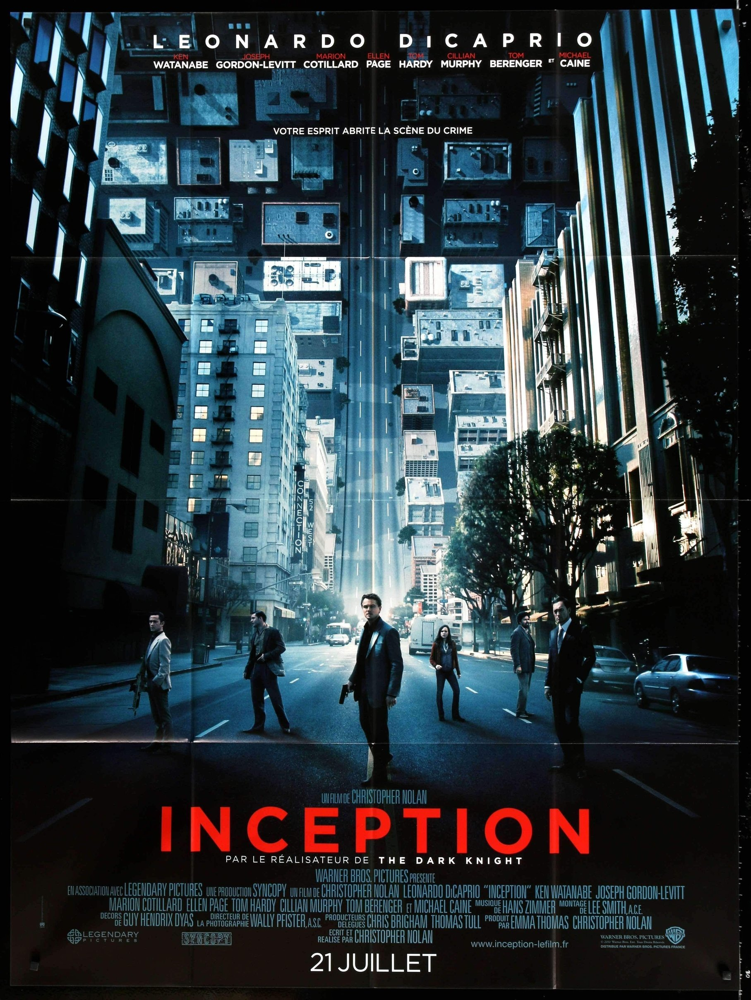

| Title | Trailer | Summary |
Catch Me If You Can |
Frank Abagnale, Jr. (Leonardo DiCaprio) worked as a doctor, a lawyer, and as a co-pilot for a major airline -- all before his 18th birthday. A master of deception, he was also a brilliant forger, whose skill gave him his first real claim to fame: At the age of 17, Frank Abagnale, Jr. became the most successful bank robber in the history of the U.S. FBI Agent Carl Hanratty (Tom Hanks) makes it his prime mission to capture Frank and bring him to justice, but Frank is always one step ahead of him. | |
Inception |
Dom Cobb (Leonardo DiCaprio) is a thief with the rare ability to enter people's dreams and steal their secrets from their subconscious. His skill has made him a hot commodity in the world of corporate espionage but has also cost him everything he loves. Cobb gets a chance at redemption when he is offered a seemingly impossible task: Plant an idea in someone's mind. If he succeeds, it will be the perfect crime, but a dangerous enemy anticipates Cobb's every move. |